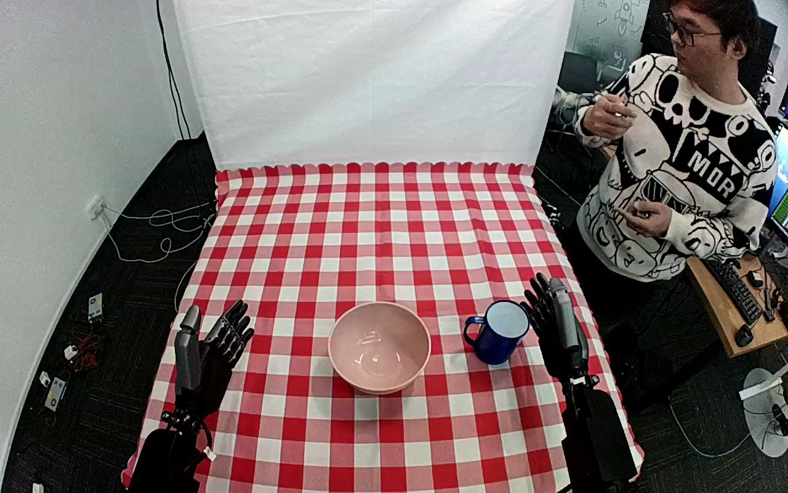

ActionNet · 01JGJQAJP3GQBKPCED
01jgjqajp3gqbkpced

Annotation
From the dedicated visual review of this video (humanoid_action_v1). Plain text · JSON
Observed outcome
- Status
successful_visible_placement
- Description
Blue mug is released upright inside the pink bowl and remains resting there while the hand from the lower-right edge withdraws.
- Selected action outcome
successful_visible_placement
- Source overall success label
not used to infer outcome
Hand roles
- Lower right visible arm
Sole manipulating hand: moves to the mug, wraps thumb and fingers around the mug body (handle side facing left and away from the palm), bears the mug through lift and transport, lowers it into the pink bowl, opens and withdraws.
- Lower left visible arm
Remains static with fingers raised at the lower-left of the table; no contact with the mug, bowl or any task object.
Coordination
Single-hand object placement. No hand-to-hand transfer, bimanual stabilization, regrasp, or physical interaction with the person standing at the upper right is observed.
Robot-side evidence
- Active arm
hand entering from the lower-right edge of the initial image
- Initial frame evidence
Two dark dexterous hands enter from the near lower image edges; the active hand is attached to the lower-right forearm, beside the blue mug. Torso and shoulders are outside the image. The forearms extend away from the near edge, which suggests a camera behind or above the robot, but camera pose and mirroring are not independently established.
- Confidence
Visible-arm identity is unambiguous; anatomical left/right is not independently established.
Chronology
| Frames | Observation |
|---|---|
| 0–46 | Pink bowl at centre and blue enamel mug at right on the checkered cloth. Both hands are clear of objects; the lower-right hand is upright beside the mug and begins to move toward it by the end of this interval. A person stands in the upper-right background handling a small item. |
| 48–118 | The lower-right hand tilts toward the mug. At native frame 60 the thumb is on top/near the mug rim and the fingers are above its side; at frame 90 the fingers have moved to the far side of the mug body while the thumb presses the near side; frame 120 shows the mug enclosed between thumb and finger surfaces on the table. |
| 120–166 | Hand tightens around the mug body on the tabletop; at native frame 150 the mug is still on the cloth. No second-hand contact. |
| 168–214 | The hand raises the mug off the cloth (lifted and tilted at frame 180, rim facing upward-left) and carries it left toward the bowl (frame 200 suspended with its handle to the left of the hand), maintaining the same body grasp. |
| 216–262 | The mug is carried over the bowl (frame 250 centred above the bowl rim, opening toward the camera) and lowered into it. |
| 264–334 | The mug is seated upright inside the pink bowl with the hand still wrapped around it (frames 300 and 330 show thumb and fingers on the mug body above the bowl rim). Small settling adjustments only; no regrasp. |
| 336–358 | The hand begins to open: at frame 340 the digits still contact the mug; at frame 350-360 the thumb and fingers separate from the mug and are visible apart from it. Exact first release frame is partially occluded. |
| 360–417 | The hand rises and withdraws to the right with fingers extended (frame 385 held above the bowl rim to the right, frame 417 held upright at the right edge of the table). The mug remains upright inside the pink bowl through the final frame, handle toward the left, with no hand contact. The left hand stays static throughout. |
Differences from the publisher annotation
- The source says place the cup in the container; the observed target is a round pink bowl.
- The source says the cup is picked up from the table; visually it is a blue enamel mug with a left-facing handle sitting on a checkered tablecloth. The prompt uses mug and pink bowl.
Uncertainties
- Torso and shoulder attachment are outside the image and camera pose or mirroring is not independently established, so anatomical left/right is uncertain; the prompt uses the hand entering from the lower-right edge.
- The exact first table-separation and first release frames are bracketed by sampled frames and partial occlusion by the hand and mug.
- Mug is grasped by its body rather than the handle; the thumb and finger contact points are only partially visible from above.
- Slight source-view motion across the sequence is possible; the required fixed-camera generation constraint is retained verbatim.
- A person in the upper-right background moves throughout but does not interact with the robot or objects.
Complete review record action_review.json
{
"dataset": "ActionNet",
"episode_id": "01JGJQAJP3GQBKPCED",
"prompt_protocol": "humanoid_action_v1",
"prompt_provenance": "visually_authored_from_video_and_initial_frame",
"review_scope": "One dedicated agent reviewed the complete unchanged 418-frame top/rgb.mp4 and the generation first frame. Full single-task sequence retained.",
"source_video": "../../original/top/rgb.mp4",
"conditioning_first_frame": "../first_frame.png",
"generation_video": "../../original/top/rgb.mp4",
"action_prompt": "../actiongeneration_prompt.txt",
"source_frame_start": 0,
"source_frame_end_exclusive": 418,
"fps_rational": "30/1",
"resolution": [
1280,
800
],
"source_annotation": {
"verbatim_task_prompt": "Pick up the cup from the table and place it in the container",
"task_prompt_path": "../../original/task_prompt.txt"
},
"anatomical_side_evidence": {
"active_arm": "hand entering from the lower-right edge of the initial image",
"initial_frame_evidence": "Two dark dexterous hands enter from the near lower image edges; the active hand is attached to the lower-right forearm, beside the blue mug. Torso and shoulders are outside the image. The forearms extend away from the near edge, which suggests a camera behind or above the robot, but camera pose and mirroring are not independently established.",
"confidence": "Visible-arm identity is unambiguous; anatomical left/right is not independently established."
},
"arm_roles": {
"lower_right_visible_arm": "Sole manipulating hand: moves to the mug, wraps thumb and fingers around the mug body (handle side facing left and away from the palm), bears the mug through lift and transport, lowers it into the pink bowl, opens and withdraws.",
"lower_left_visible_arm": "Remains static with fingers raised at the lower-left of the table; no contact with the mug, bowl or any task object."
},
"coordination": "Single-hand object placement. No hand-to-hand transfer, bimanual stabilization, regrasp, or physical interaction with the person standing at the upper right is observed.",
"chronology": [
{
"frames": [
0,
46
],
"observation": "Pink bowl at centre and blue enamel mug at right on the checkered cloth. Both hands are clear of objects; the lower-right hand is upright beside the mug and begins to move toward it by the end of this interval. A person stands in the upper-right background handling a small item."
},
{
"frames": [
48,
118
],
"observation": "The lower-right hand tilts toward the mug. At native frame 60 the thumb is on top/near the mug rim and the fingers are above its side; at frame 90 the fingers have moved to the far side of the mug body while the thumb presses the near side; frame 120 shows the mug enclosed between thumb and finger surfaces on the table."
},
{
"frames": [
120,
166
],
"observation": "Hand tightens around the mug body on the tabletop; at native frame 150 the mug is still on the cloth. No second-hand contact."
},
{
"frames": [
168,
214
],
"observation": "The hand raises the mug off the cloth (lifted and tilted at frame 180, rim facing upward-left) and carries it left toward the bowl (frame 200 suspended with its handle to the left of the hand), maintaining the same body grasp."
},
{
"frames": [
216,
262
],
"observation": "The mug is carried over the bowl (frame 250 centred above the bowl rim, opening toward the camera) and lowered into it."
},
{
"frames": [
264,
334
],
"observation": "The mug is seated upright inside the pink bowl with the hand still wrapped around it (frames 300 and 330 show thumb and fingers on the mug body above the bowl rim). Small settling adjustments only; no regrasp."
},
{
"frames": [
336,
358
],
"observation": "The hand begins to open: at frame 340 the digits still contact the mug; at frame 350-360 the thumb and fingers separate from the mug and are visible apart from it. Exact first release frame is partially occluded."
},
{
"frames": [
360,
417
],
"observation": "The hand rises and withdraws to the right with fingers extended (frame 385 held above the bowl rim to the right, frame 417 held upright at the right edge of the table). The mug remains upright inside the pink bowl through the final frame, handle toward the left, with no hand contact. The left hand stays static throughout."
}
],
"observed_outcome": {
"status": "successful_visible_placement",
"description": "Blue mug is released upright inside the pink bowl and remains resting there while the hand from the lower-right edge withdraws.",
"selected_action_outcome": "successful_visible_placement",
"source_overall_success_label": "not used to infer outcome"
},
"source_annotation_discrepancies": [
"The source says place the cup in the container; the observed target is a round pink bowl.",
"The source says the cup is picked up from the table; visually it is a blue enamel mug with a left-facing handle sitting on a checkered tablecloth. The prompt uses mug and pink bowl."
],
"uncertainties": [
"Torso and shoulder attachment are outside the image and camera pose or mirroring is not independently established, so anatomical left/right is uncertain; the prompt uses the hand entering from the lower-right edge.",
"The exact first table-separation and first release frames are bracketed by sampled frames and partial occlusion by the hand and mug.",
"Mug is grasped by its body rather than the handle; the thumb and finger contact points are only partially visible from above.",
"Slight source-view motion across the sequence is possible; the required fixed-camera generation constraint is retained verbatim.",
"A person in the upper-right background moves throughout but does not interact with the robot or objects."
],
"inspection_coverage": {
"total_decoded_frames": 418,
"overview_frame_indices": {
"start": 0,
"stop_inclusive": 416,
"step": 2,
"count": 209
},
"overview_method": "Decoded RGB every second frame into eighteen temporary 4-by-3 contact sheets (480 px wide tiles) outside dataset folders; reviewed all sheets.",
"native_resolution_frames": [
0,
60,
70,
90,
110,
120,
150,
180,
200,
230,
250,
270,
300,
330,
340,
350,
360,
385,
417
],
"native_resolution": [
1280,
800
],
"initial_png_inspected_after_full_sequence": true,
"temporary_evidence_location": "/tmp/an_review_01JGJQAJP3GQBKPCED (not under generation input)",
"retained_evidence_frame_directories": false
},
"preservation": {
"whole_original_single_task_clip_retained": true,
"crop": false,
"shorten": false,
"resize": false,
"reencode": false,
"source_and_generation_sha256_equal": true
},
"prompt_word_count": 80
}